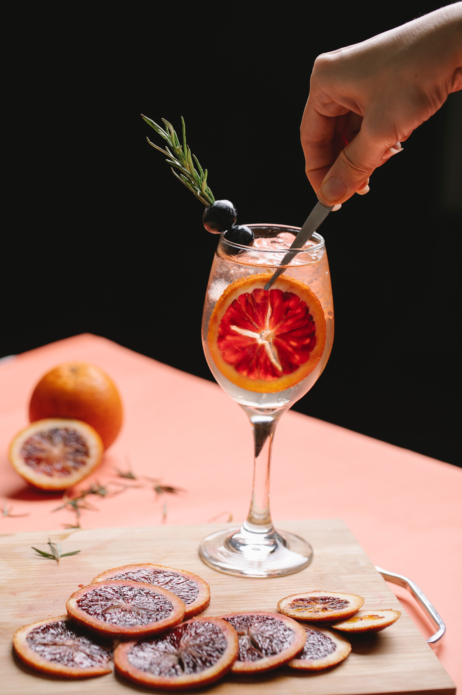

¡CONVERTITE EN TU PROPIO BARTENDER!

¿Sabes cómo utilizar los botánicos en tu Gin-tonic?
Si quieres extraer todo su sabor, te recomendamos macerar la especia elegida.
Las bayas de enebro, los granos de pimienta o las semillas de cardamomo por ejemplo, pueden aplastarse para que todo su aroma, aceites esenciales y propiedades se transfieran a la ginebra. Machacando ligeramente unos pocos granos e incorporando posteriormente la ginebra para que macere durante unos minutos, conseguirás Gin-tonics llenos de sabor y aroma.La canela, en pequeños trozos o sticks, incorpora un toque dulce y al mismo tiempo picante. Rallada es perfecta para añadir todavía más sabor a los cócteles con base de whisky.